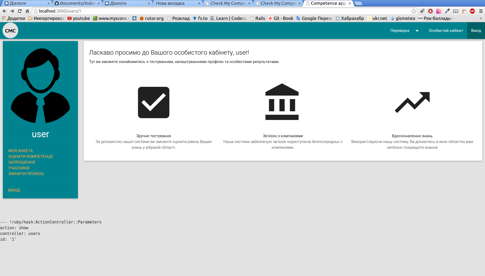
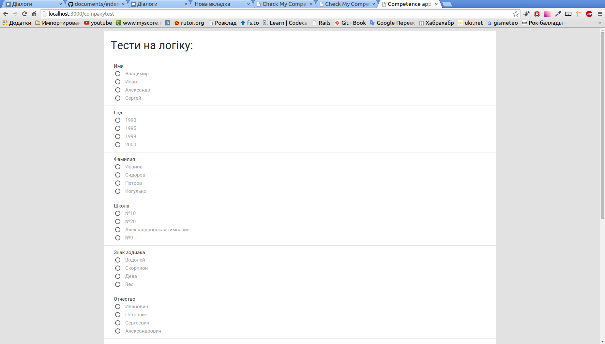
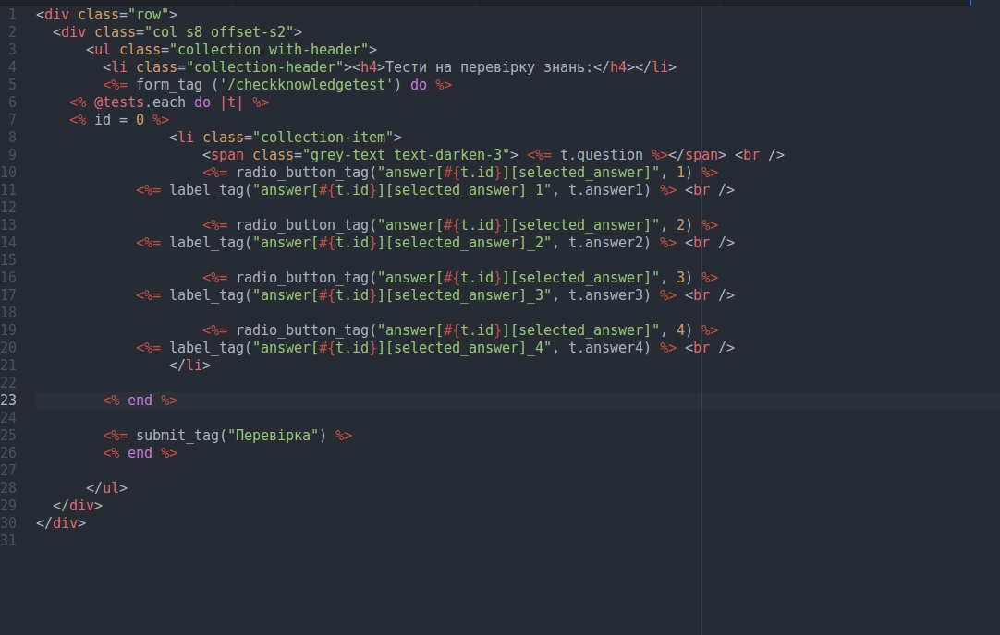

Завдання: Забезпечити коректне відображення створених тестів при проходженні їх користувачем
На даному етапі нами були додані тести для відображення у кабінеті користувача.
Для того щоб перейти до тестування необхыдно обрати пункт "Оцінка компетенцій" в кабінеті користувача.

Рис.1 Кабінет користувача
Тести являють собою питання з 4 можливими
варіантами відповіді. Правильна відповідь визначається за допомогою натискання на радіокнопку.

Рис.2 Тести
Це забезпечуэться за допомогою наступного коду:

Рис.3 Відображення тестів
В данний "вигляд" передаються всі запитання, які користувач має пройти. Для кожного завдання відображається запитання
( question ) та 4 варіанти відповіді ( answer1, answer2, answer3, answer4 ) . Після цього вибрана відповідь
записується у поточну комірку масиву відповідей користувача ( answer[] )
Завдання беруться з бази даних экзаменатора, який надає право користувачу на тестування.